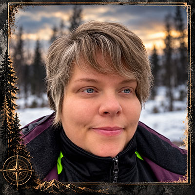

Övergivna Världar, ruiner av ett annat liv

Ändring testad i dev branch
Jag är inte bara gruvarbetare, jag identifierar mig även som Urban Explorer
Urbex handlar för mig om att upptäcka övergivna platser och spåren efter människorna som en gång fanns där. Gamla hus, industrier
och bortglömda miljöer berättar historier som fortfarande finns kvar – om man vet var man ska titta.